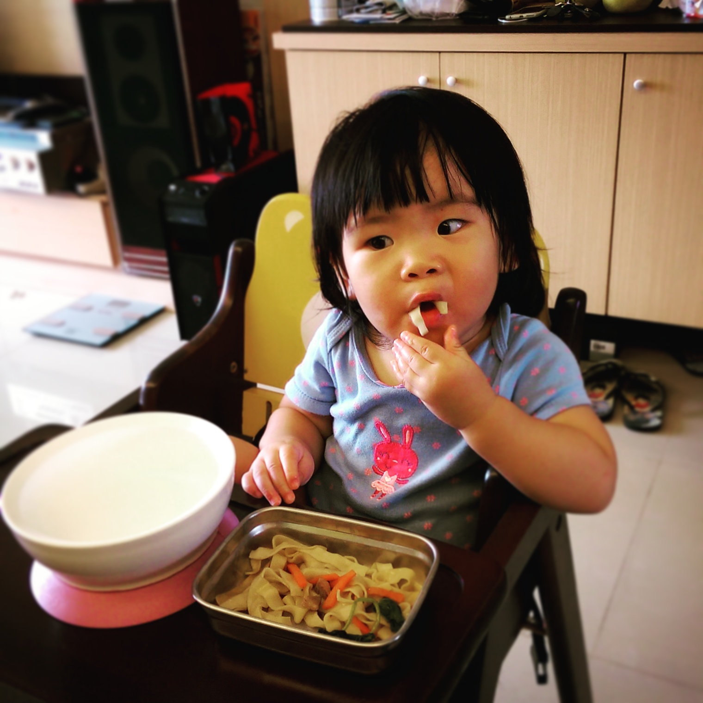
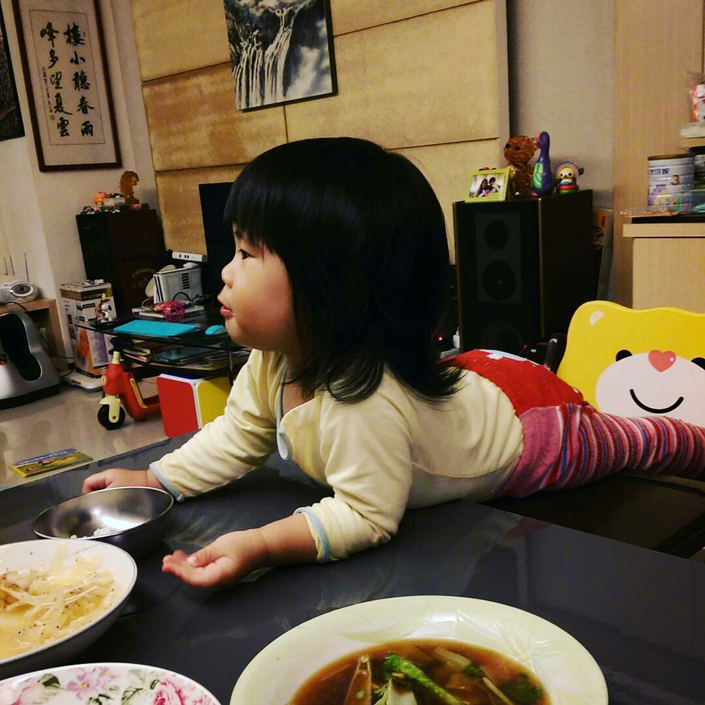
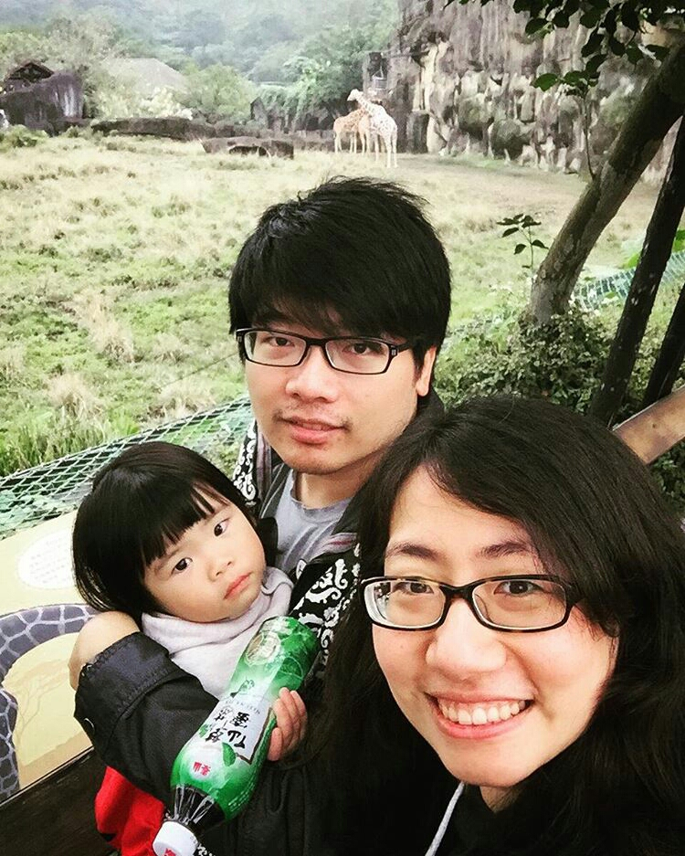

勞保雖然不知道什麼時候會倒，但是這個部分還是有點作用的，
當被保險人同時具備下列條件，得請領育嬰留職停薪津貼：
倒不是說帶小孩有哪邊特別難，我家這一隻已經算是很天使了，可怕的是...
不會煮飯啊..................
所以當小孩願意主動拿起你煮的麵來吃的時候，心裡的那份感動，讓我忍不住發到Instagram上面
 不過久了就變這樣...->

現在倒是有點覺得時間不夠，參與小孩子的成長很有趣，總是有些零碎時間就可以來上一些像是html的課，其實有點害怕，害怕的是，不趁現在多帶一點東西進腦子，將來還是只能做一樣的事情．
